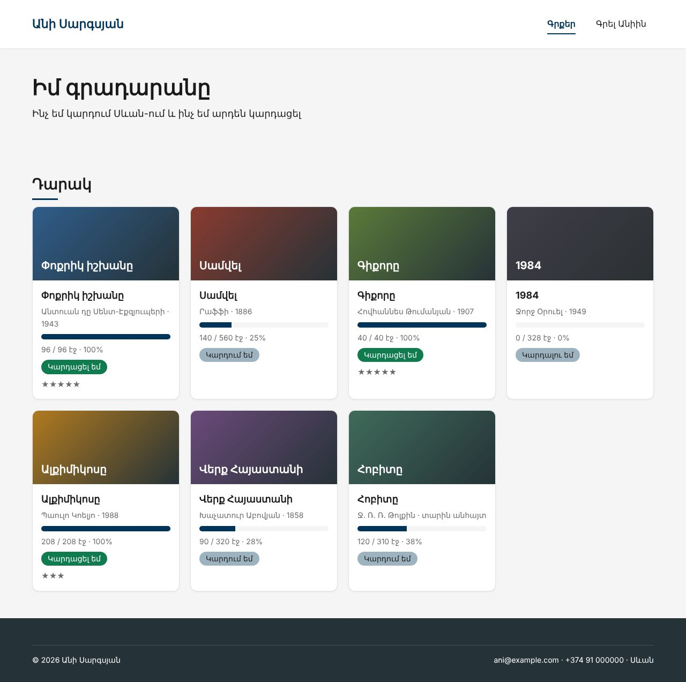
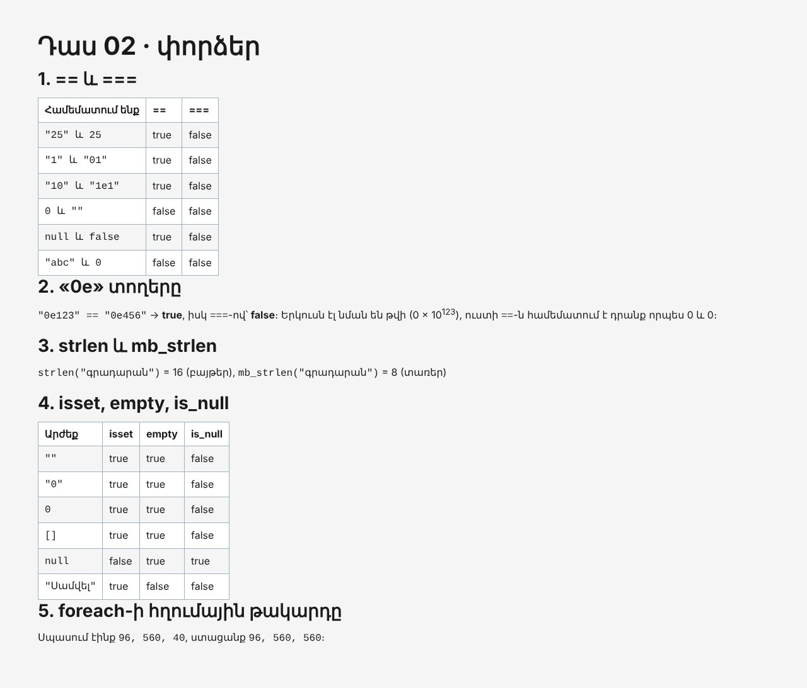

Տնային աշխատանք · PHP Դաս 02 · մինի-նախագիծ
Յոթ գիրք այլևս չեն գրվում յոթ անգամ HTML-ում։ Դրանք data.php-ի մեկ զանգվածում են, իսկ քարտը գրվում է մեկ անգամ՝ foreach-ի ներսում։ Կարգավիճակը որոշում է if/elseif-ը, պիտակը՝ match-ը, աստղերը՝ for-ը։
Դաս 01–02․ զանգվածներ, foreach, for, if/elseif, match, ??, == և ===, isset, empty, strlen, mb_strlen, այլընտրանքային շարահյուսություն։ Սեփական ֆունկցիաներ դեռ չկան (Դաս 03)։


Շարունակիր քո նախագիծը։ Եթե բաց ես թողել նախորդ դասը, սկսիր Դաս 01-ի օրինակից։
starter/data.php — 7 գիրքը զանգվածում, որ չգրես ձեռքով| Գործարկել |
|---|
php -S localhost:8000 |
starter/data.php-ը և միացրու require-ովid, title, author, year, pages, read, genre, rating, color։ «Հոբիտը» տարի չունի դիտավորյալ<article class="book">՝ foreach ($books as $book):-ի ներսումforeach: … endforeach;, որ HTML-ը մնա ընթեռնելիif/elseif՝ planned, reading, donematch՝ պիտակը հայերեն (տնային 7․ համեմատիր switch-ի հետ)?? 'տարին անհայտ'՝ «Հոբիտի» համարif ($book['read'] === 0) {
$status = 'planned';
} elseif ($book['read'] >= $book['pages']) {
$status = 'done';
} else {
$status = 'reading';
}
// match՝ կարճ, վերադարձնում է արժեք, համեմատում է === -ով
$label = match ($status) {
'done' => 'Կարդացել եմ',
'reading' => 'Կարդում եմ',
'planned' => 'Կարդալու եմ',
};(int) ($book['read'] * 100 / $book['pages'])for-ով այնքան անգամ, ինչքան rating էlab.php՝ ==/=== աղյուսակ, "0e123" == "0e456", strlen/mb_strlen, isset/empty/is_null աղյուսակforeach-ի հղումային թակարդը (&$b) և բացատրություն (տնային 8)<article>===lab.php-ի աղյուսակները հաշվում է PHP-ն, ոչ դու| Սխալ | Ինչպես ուղղել |
|---|---|
Undefined array key "year" | Օգտագործիր $book['year'] ?? 'տարին անհայտ' |
| Ամեն քարտ «Կարդում եմ» է | Պայմանների հերթականությունը․ նախ === 0, հետո >= pages, վերջում մնացածը |
UnhandledMatchError | match-ին պետք է default |
| Վերջին գիրքը կրկնվում է | foreach (... as &$book)-ից հետո չես արել unset($book) |
Սրանք Դաս 02-ի տնային աշխատանքի կետերն են։ «մինի-նախագծում» նշվածները արդեն կատարել ես վերևի քայլերում՝ Անիի ակումբում։ Մնացածը կատարիր ՏեխնոՄարկետում, ինչպես գրված է դասում։
==-ով և ===-ով։ Կազմիր աղյուսակ արդյունքներով։ մինի-նախագծում"0e123" == "0e456"-ը վտանգավոր է։ Բացատրիր սեփական բառերով։ մինի-նախագծումstrlen-ը և mb_strlen-ը հայերեն բառի վրա։ Բացատրիր տարբերությունը։ մինի-նախագծումisset, empty, is_null 6 տարբեր արժեքի վրա։ մինի-նախագծումempty-ի թակարդի իրական օրինակ քո ֆորմայում և ուղղիր։switch match-ով։ Հաշվիր՝ քանի՞ տող կրճատվեց։ մինի-նախագծումforeach-ի հղումային թակարդը կոդով և բացատրիր, ինչու է վերջին տարրը փչանում։ մինի-նախագծումecho-ով, ապա այլընտրանքային շարահյուսությամբ։ Ո՞րն է ընթեռնելի։ մինի-նախագծում??-ը առնվազն երեք տեղում։ մինի-նախագծումԵրբ բաժին 03-ի բոլոր կետերը նշված են, բացիր օրինակը։ Գտիր մեկ բան, որ դու արել ես այլ կերպ, և մտածիր՝ որն է ավելի հասկանալի և ինչու։ Քո լուծումը կարող է տարբերվել և լինել ճիշտ։